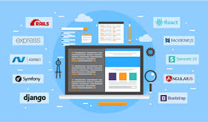

Frameworks

¿Qué es un Framework?
Un framework es una plataforma de software que proporciona una estructura estándar y herramientas reutilizables para facilitar el desarrollo de aplicaciones. Simplifica el proceso de desarrollo al ofrecer componentes predefinidos, plantillas y buenas prácticas que ayudan a los desarrolladores a escribir código más eficiente y estructurado.
Ventajas y Desventajas de Usar Frameworks
Ventajas
- Productividad: Al ofrecer código reutilizable, se acelera el desarrollo.
- Estandarización: Proporcionan estructuras claras, lo que facilita el mantenimiento y la colaboración en equipo.
- Comunidad y soporte: Los frameworks populares tienen una comunidad grande y activa que proporciona soluciones, documentación y recursos adicionales.
Desventajas
- Curva de aprendizaje: Algunos frameworks pueden ser complejos y requieren tiempo para dominar.
- Rigidez: Los frameworks imponen una estructura que puede limitar la flexibilidad si se requiere algo personalizado fuera de lo común.
Frameworks Frontend más Usados
- React: Biblioteca de JavaScript desarrollada por Facebook para construir interfaces de usuario interactivas y reutilizables.
- Angular: Framework desarrollado por Google que permite construir aplicaciones web dinámicas de una sola página (SPA).
- Vue.js: Un framework progresivo de JavaScript que se puede integrar fácilmente en proyectos existentes y permite crear interfaces web reactivas.
Frameworks Backend más Usados
- Node.js con Express: Plataforma basada en JavaScript que permite construir aplicaciones web en el servidor. Express es un framework minimalista para Node.js que facilita la creación de APIs y aplicaciones web.
- Laravel: Framework de PHP que ofrece una sintaxis elegante y un conjunto robusto de herramientas para desarrollar aplicaciones web complejas.
- Django: Framework de Python diseñado para facilitar el desarrollo rápido de aplicaciones web seguras y escalables.